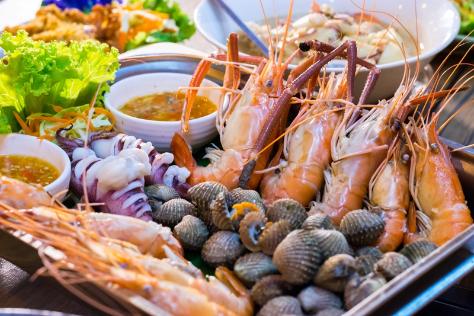

|

โอ้! ปักษ์ใต้บ้านเรา~ แม่น้ำภูเขาทะเลอุดมสมบูรณ์จริง ๆ แต่ที่สมบูรณ์กว่าธรรมชาติก็ของกินนี่แหละ! โดยเฉพาะของกินกระบี่ที่รสชาติไร้เทียมทานเป็นสวรรค์ของกินถิ่นแดนใต้ที่แท้ทรู~ มาครบทั้งคาวหวานจากหลากหลายวัฒนธรรมอาหาร อยากจะรู้ว่ามีร้านไหนเด็ด ร้านไหนดัง ก็ตะลุยกินกันให้สุดกับ 30 ร้านอาหารกระบี่ จัดจ้านหรอยแรงในแดนปักษ์ใต้ อัปเดตปี 2021! จะเข้มข้นจัดจ้านสไตล์ด้ามขวานอย่างที่ร่ำลือหรือเปล่า? ก็มุ่งไปกระบี่แล้วลิ้มชิมรสให้ครบกันไปเลย!
|